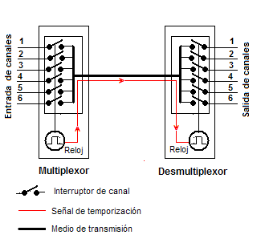
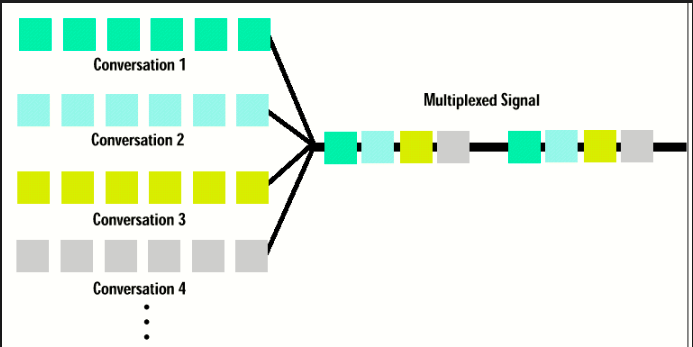

Introducción
TDM divide el tiempo en intervalos asignados a diferentes señales. Tanenbaum señala que es ampliamente utilizada en sistemas digitales.
Desarrollo
Cada señal transmite en su intervalo asignado de forma cíclica. Forouzan explica que TDM es eficiente cuando todas las señales tienen datos constantes.


Conclusión
En conclusión, TDM permite compartir eficientemente un canal mediante la división temporal.